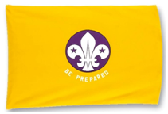

CUBS
 Cubs is the second section of the Scouting movement, originally started in 1916 for younger brothers who wanted a 'look-in'. In nearly a century, the section has constantly evolved and adapted its programme and methods to meet the changing needs of each generation of young people.
Cubs is the second section of the Scouting movement, originally started in 1916 for younger brothers who wanted a 'look-in'. In nearly a century, the section has constantly evolved and adapted its programme and methods to meet the changing needs of each generation of young people.
During their time in the Pack, Cub Scouts will get a chance to try lots of different activities like camping, cooking, exploring, collecting and they also get to go on trips and days out.
The Cub Scout Promise
I promise that I will do my best
To do my duty to God and to the Queen
To help other people
And to keep the Cub Scout Law.
The Cub Scout Law
Cub Scouts always do their best
Think of others before themselves
And do a good turn every day.
